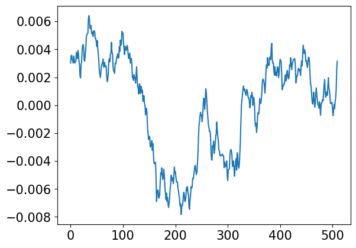

import numpy as np
import matplotlib.pyplot as plt
import scipy.signal as signal
plt.rc('font', size=15)
# Overlap-add FIR filter, (c) Joachim Thiemann 2016
# https://github.com/jthiem/overlapadd/blob/master/olafilt.py
#
# modified by WMXZ to work on multi-channel data
#
def fft_filt(b, x, zi=None, nh=0):
"""
Filter a one-dimensional array with an FIR filter
Filter a data sequence, `x`, using a FIR filter given in `b`.
Filtering uses the overlap-add method converting both `x` and `b`
into frequency domain first. The FFT size is determined as the
next higher power of 2 of twice the length of `b`.
Parameters
----------
b : one-dimensional numpy array
The impulse response of the filter
x : one-dimensional numpy array
Signal to be filtered
zi : one-dimensional numpy array, optional
Initial condition of the filter, but in reality just the
runout of the previous computation. If `zi` is None or not
given, then zero initial state is assumed.
nh : time shift of result (group delay)
Returns
-------
y : array
The output of the digital filter.
zf : array, optional
If `zi` is None, this is not returned, otherwise, `zf` holds the
final filter delay values.
"""
if x.ndim==1: x=x.reshape(-1,1)
if b.ndim==1: b=b.reshape(-1,1)
L_I = b.shape[0]
# Find power of 2 larger that 2*L_I (from abarnert on Stackoverflow)
L_F = 2<<(L_I-1).bit_length()
L_S = L_F - L_I + 1
L_sig,N_sig = x.shape
offsets = range(0, L_sig, L_S)
# handle complex or real input
if np.iscomplexobj(b) or np.iscomplexobj(x):
fft_func = np.fft.fft
ifft_func = np.fft.ifft
res = np.zeros((L_sig+L_F,N_sig), dtype=np.complex128)
else:
fft_func = np.fft.rfft
ifft_func = np.fft.irfft
res = np.zeros((L_sig+L_F,N_sig))
FDir = fft_func(b, n=L_F,axis=0)
# overlap and add
for n in offsets:
res[n:n+L_F,:] += ifft_func(fft_func(x[n:n+L_S,:], n=L_F,axis=0)*FDir,axis=0)
if zi is not None:
res[:zi.shape[0],:] = res[:zi.shape[0],:] + zi
zi=res[L_sig:,:]
return res[nh:nh+L_sig,:],zi
else:
return res[nh:nh+L_sig,:]
nt=256
x=np.arange(nt).reshape(-1,1)
x[0]=1
n=np.random.rand(nt,1)
c=np.exp(2*np.pi*1j*n)/x
c[0,0]=0
h=np.fft.irfft(c,axis=0)
plt.plot(h)
plt.show()
f,p=signal.welch(h,axis=0)
plt.semilogx(f,10*np.log10(p))
plt.semilogx(f,10*np.log10(1e-7/f**2/4))
plt.grid(True)
plt.show()

C:\Users\zimme\AppData\Local\Temp\ipykernel_22384\3161495930.py:13: RuntimeWarning: divide by zero encountered in divide
plt.semilogx(f,10*np.log10(1e-7/f**2/4))
#https://stackoverflow.com/questions/67085963/generate-colors-of-noise-in-python
import numpy as np
import matplotlib.pyplot as plt
def plot_spectrum(s):
f = np.fft.rfftfreq(len(s))
return plt.loglog(f, np.abs(np.fft.rfft(s)))[0]
def noise_psd(N, psd = lambda f: 1):
X_white = np.fft.rfft(np.random.randn(N));
S = psd(np.fft.rfftfreq(N))
# Normalize S
S = S / np.sqrt(np.mean(S**2))
X_shaped = X_white * S;
return np.fft.irfft(X_shaped);
def PSDGenerator(f):
return lambda N: noise_psd(N, f)
@PSDGenerator
def brownian_noise(f):
return 1/np.where(f == 0, float('inf'), f)
@PSDGenerator
def pink_noise(f):
return 1/np.where(f == 0, float('inf'), np.sqrt(f))
#
plt.figure(figsize=(12, 8), tight_layout=True)
for G, c in zip(
[brownian_noise, pink_noise],
['brown', 'hotpink']):
plot_spectrum(G(30*50_000)).set(color=c, linewidth=3)
plt.legend(['brownian', 'pink'])
plt.suptitle("Colored Noise");
plt.ylim([1e-3, None]);
plt.show()
import numpy as np
import matplotlib.pyplot as plt
import scipy.signal as signal
def shipNoise(N):
N2 = N//2+1
f = np.arange(0,N2)/20
A2 = np.sqrt(f*np.exp(-f))
A2 /= np.sqrt(np.sum(A2**2))
n2 = np.random.random(N2)
p2 = 2*np.pi*(n2-0.5)
d2 = A2*np.exp(1j*p2)
#
x = np.fft.irfft(d2)
return x
xx=np.hstack((shipNoise(1024),shipNoise(1024),shipNoise(1024),shipNoise(1024)))
f,P= signal.welch(xx,axis=0)
plt.plot(f,P)
plt.grid(True)
plt.show()
it=np.arange(-6000,6000,10).reshape(-1,1) # in time in seconds
vv=np.array([-1,1,0]) # speed in m/s
cp = np.array([500,500,0]) # closest point of approach
ro = np.array([0,0,-100]) # recorder location
ss = (cp-ro)+vv*it # relative source location
rr=np.sum(ss**2,1)
plt.figure(figsize=(7,7))
plt.plot(ss[:,0],ss[:,1])
plt.plot(0,0,'o')
plt.plot(ss[0,0],ss[0,1],'go')
plt.plot(ss[-1,0],ss[-1,1],'ro')
plt.grid(True)
plt.gca().set_aspect('equal')
plt.xlabel('Easting')
plt.ylabel('Northing')
plt.show()
plt.plot(it,1/rr)
plt.show()
nfft=256
M=np.zeros((nfft//2+1,len(it)))
for nn in range(len(it)):
xx=shipNoise(1024)
for ii in range(100):
xx=np.append(xx,shipNoise(1024))
xx *= 1e+9/rr[nn]
if nn%100 ==0: print(nn,xx.std())
f,P=signal.welch(xx,nfft=nfft,fs=96000,axis=0)
M[:,nn]=P
0 0.01904658573989666
100 0.0273424654919842
200 0.04248132673023325
300 0.07461198984332301
400 0.1622876535839962
500 0.5502262677290204
600 2.707976337254498
700 0.5502262677290503
800 0.162287653584015
900 0.07461198984332561
1000 0.04248132673024365
1100 0.027342465491981376
plt.imshow(10*np.log10(M),aspect='auto',origin='lower',extent=[0,20,f[0]/1000,f[-1]/1000])
plt.colorbar()
plt.show()
#hydrophone configuration
dz=np.sqrt(0.5)
print(2*dz)
ho=np.array([[1,0,-dz],[-1,0,-dz],[0,-1,dz],[0,1,dz]])*0.0725
hsel=np.array([[1,0],[2,0],[3,0],[2,1],[3,1],[3,2]])
nc=hsel.shape[0]
D=ho[hsel[:,0],:]-ho[hsel[:,1],:]
L=np.sqrt(np.sum(D**2,1))
print(L,'m')
print(0.75/L, 'kHz')
DI=np.linalg.pinv(D)
#
plt.plot(ho[:2,0],ho[:2,1],'o') # bottom
plt.plot(ho[2:,0],ho[2:,1],'ro') # top
plt.text(ho[0,0],ho[0,1],' 1')
plt.text(ho[1,0],ho[1,1],' 2')
plt.text(ho[2,0],ho[2,1],' 3')
plt.text(ho[3,0],ho[3,1],' 4')
plt.grid(True)
plt.gca().set_aspect('equal')
plt.show()
1.4142135623730951
[0.145 0.145 0.145 0.145 0.145 0.145] m
[5.17241379 5.17241379 5.17241379 5.17241379 5.17241379 5.17241379] kHz

# Overlap-add FIR filter, (c) Joachim Thiemann 2016
# https://github.com/jthiem/overlapadd/blob/master/olafilt.py
#
# modified by WMXZ to work on multi-channel data
#
def fft_filt(b, x, zi=None, nh=0):
"""
Filter a one-dimensional array with an FIR filter
Filter a data sequence, `x`, using a FIR filter given in `b`.
Filtering uses the overlap-add method converting both `x` and `b`
into frequency domain first. The FFT size is determined as the
next higher power of 2 of twice the length of `b`.
Parameters
----------
b : one-dimensional numpy array
The impulse response of the filter
x : one-dimensional numpy array
Signal to be filtered
zi : one-dimensional numpy array, optional
Initial condition of the filter, but in reality just the
runout of the previous computation. If `zi` is None or not
given, then zero initial state is assumed.
nh : time shift of result (group delay)
Returns
-------
y : array
The output of the digital filter.
zf : array, optional
If `zi` is None, this is not returned, otherwise, `zf` holds the
final filter delay values.
"""
if x.ndim==1: x=x.reshape(-1,1)
if b.ndim==1: b=b.reshape(-1,1)
L_I = b.shape[0]
# Find power of 2 larger that 2*L_I (from abarnert on Stackoverflow)
L_F = 2<<(L_I-1).bit_length()
L_S = L_F - L_I + 1
L_sig,N_sig = x.shape
offsets = range(0, L_sig, L_S)
# handle complex or real input
if np.iscomplexobj(b) or np.iscomplexobj(x):
fft_func = np.fft.fft
ifft_func = np.fft.ifft
res = np.zeros((L_sig+L_F,N_sig), dtype=np.complex128)
else:
fft_func = np.fft.rfft
ifft_func = np.fft.irfft
res = np.zeros((L_sig+L_F,N_sig))
FDir = fft_func(b, n=L_F,axis=0)
# overlap and add
for n in offsets:
res[n:n+L_F,:] += ifft_func(fft_func(x[n:n+L_S,:], n=L_F,axis=0)*FDir,axis=0)
if zi is not None:
res[:zi.shape[0],:] = res[:zi.shape[0],:] + zi
zi=res[L_sig:,:]
return res[nh:nh+L_sig,:],zi
else:
return res[nh:nh+L_sig,:]
def sim_array(yy,fs,DT1,noise):
# delay signal according to array geometry
# (use fractional delay with sinc function)
kk=np.arange(-10,10,1);
ss=np.zeros((len(yy),len(DT1)))
for ii in range(len(DT1)):
hh=np.sinc(kk+DT1[ii]*fs/1000)
ss[:,ii]=fft_filt(hh,yy)[:,0]
nn=np.random.normal(scale=noise, size=ss.shape)
ss +=nn
return ss
#from numba import jit, int32, uint32, int64, float64, types
# @jit((types.Array(float64, 1, "C"),
# int64,
# int64,
# types.Array(float64, 1, "C"),
# types.Array(float64, 1, "C")),nopython=True,cache=True)
def intensity(yy,fs,nfft,hsel,DI):
nc=hsel.shape[0]
f,t,Q=signal.stft(yy,fs=fs,nperseg=nfft,noverlap=nfft//2,nfft=nfft,axis=0)
#
n1,n2,n3=Q.shape # nfr,nch,nsmp
C=np.zeros((n1,n3,nc))
for ii in range(nc):
C[:,:,ii] = np.imag(Q[:,hsel[ii,0],:]*np.conjugate(Q[:,hsel[ii,1],:]))
#
# # 3-d summation
I=-C@DI.T
return f,t,I
nfft=256
fs=96000
M=np.zeros((nfft//2+1,len(it),3))
for nn in range(len(it)):
#
## simulate delay
S=-ss[nn,:]/np.sqrt(rr[nn])
DC=np.sum(ho*S,1)
DT=DC/1.500 # ms
#
xx=shipNoise(1024)
for ii in range(100):
xx=np.append(xx,shipNoise(1024))
xx *= 1e+9/rr[nn]
#
sn=0.1
yy=sim_array(xx,fs,DT,sn)[10:fs+10,:]
if nn%100 ==0: print(nn,xx.std(),yy.std(),20*np.log10(xx.std()/sn))
#print(yy.dtype,type(fs),type(nfft),hsel.dtype,DI.dtype)
f,t,I = intensity(yy,fs,nfft,hsel,DI)
M[:,nn,:]=np.mean(I,1)
#
# adress zero and nyquist frequency
M[ 0,:,:] = M[ 1,:,:]
M[-1,:,:] = M[-2,:,:]
0 0.019046585739894872 0.10185046963707518 -14.403657278735377
100 0.027342465491977417 0.10369586331827756 -11.2632465464361
200 0.04248132673023458 0.10844089824279407 -7.436038566110717
300 0.07461198984333445 0.12462939348142374 -2.5438275512450437
400 0.1622876535840061 0.19086045266456012 4.2057096221198425
500 0.550226267729045 0.5593265483838773 14.810826394190908
600 2.707976337254482 2.7091277299346084 28.652897301852207
700 0.5502262677291003 0.5602192433380659 14.810826394191778
800 0.1622876535840075 0.19043215508996383 4.205709622119917
900 0.07461198984331893 0.12494244958285684 -2.5438275512468507
1000 0.04248132673023322 0.10884772110221479 -7.436038566110995
1100 0.02734246549197749 0.10369692278831581 -11.263246546436076
M[ 0,:,:] = M[ 1,:,:]
M[-1,:,:] = M[-2,:,:]
Mn=np.sqrt(np.sum(M**2,2))
#
K=M/Mn.reshape(M.shape[0],M.shape[1],1)
tx=np.array([-6000,6000])/60 # minutes
yl=[0,20]
plt.figure(figsize=(10,14),layout='tight')
plt.subplot(411)
plt.imshow(10*np.log10(Mn),aspect='auto',origin='lower',extent=[tx[0],tx[1],f[0]/1000,f[-1]/1000])
plt.hlines(np.min(0.75/np.max(L)),tx[0],tx[1],colors='w',linestyles='--')
plt.ylim(yl)
plt.colorbar()
plt.ylabel('Frequency [kHz]')
plt.title('Intensity')
plt.subplot(412)
plt.imshow(K[:,:,0],aspect='auto',origin='lower',extent=[tx[0],tx[1],f[0]/1000,f[-1]/1000],clim=[-1,1])
plt.hlines(np.min(0.75/np.max(L)),tx[0],tx[1],colors='w',linestyles='--')
plt.ylim(yl)
plt.colorbar()
plt.ylabel('Frequency [kHz]')
plt.title('Intensity x-component')
plt.subplot(413)
plt.imshow(K[:,:,1],aspect='auto',origin='lower',extent=[tx[0],tx[1],f[0]/1000,f[-1]/1000],clim=[-1,1])
plt.hlines(np.min(0.75/np.max(L)),tx[0],tx[1],colors='w',linestyles='--')
plt.ylim(yl)
plt.colorbar()
plt.ylabel('Frequency [kHz]')
plt.title('Intensity y-component')
plt.subplot(414)
plt.imshow(K[:,:,2],aspect='auto',origin='lower',extent=[tx[0],tx[1],f[0]/1000,f[-1]/1000],clim=[-1,1])
plt.hlines(np.min(0.75/np.max(L)),tx[0],tx[1],colors='w',linestyles='--')
plt.ylim(yl)
plt.colorbar()
plt.ylabel('Frequency [kHz]')
plt.title('Intensity z-component')
plt.xlabel('Time [min]')
plt.show()
k1=int(2/96*256)
k2=int(4/96*256)
K2=np.mean(K[k1:k2,:,:],axis=0)
plt.figure(figsize=(7,4))
plt.plot(it/60,K2,label=['X','Y','Z'])
plt.plot(it/60,ss/np.sqrt(rr).reshape(-1,1),'k--')
plt.ylim(-1.1,1.1)
plt.xlabel('Time [min]')
plt.grid(True)
plt.legend()
plt.show()
print(xx.std(),np.std(yy),np.std(shipNoise(1024)))
0.019109784281762677 0.10174290603767291 0.0013810679320010262